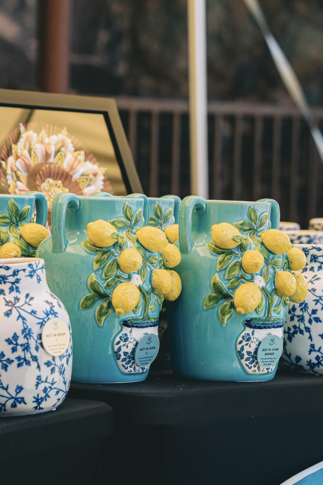

Galerii
Naudi neid kauneid pilte meie näitustelt ja üritustelt!
- Meeleolupildid, Ülenurme 20.–21.06.2026
- Rahvusvaheline näitus, Ülenurme 21.06.2026
- Rahvusvaheline näitus, Ülenurme 20.06.2026
- Rahvuslik näitus, Valga 22.02.2026
- Rahvuslik näitus, Valga 21.02.2026
- Rahvusvaheline näitus, Ülenurme 03.08.2025
- Rahvusvaheline näitus, Ülenurme 02.08.2025
- Rahvuslik näitus, Valga 23.02.2025
- Rahvuslik näitus, Valga 22.02.2025
- Meeleolupildid, Valga 22.–23.02.2025
- Rahvuslik näitus, Ülenurme 06.07.2024
- Meeleolupildid, Ülenurme 06.–07.07.2024
- Rahvuslik näitus, Ülenurme 07.07.2024
- Rahvuslik näitus, Ülenurme 06.07.2024
- Rahvuslik näitus, Valga 25.02.2024
- Rahvuslik näitus, Valga 24.02.2024
- Rahvuslik näitus, Imavere 02.07.2023
- Rahvuslik näitus, Imavere 01.07.2023
- Rahvuslik näitus, Valga 26.02.2023
- Rahvuslik näitus, Valga 25.02.2023
- Rahvusvaheline näitus, Imavere 03.07.2022
- Rahvusvaheline näitus, Imavere 02.07.2022
- Rahvuslik näitus, Valga 27.02.2022
- Rahvuslik näitus, Valga 26.02.2022
Kõiki pilte on lubatud kasutada ja jagada sotsiaalmeedias. Palume märkida foto autor.
It is allowed to use all photos and share in social media. Please mark the author of the photo.
It is allowed to use all photos and share in social media. Please mark the author of the photo.
